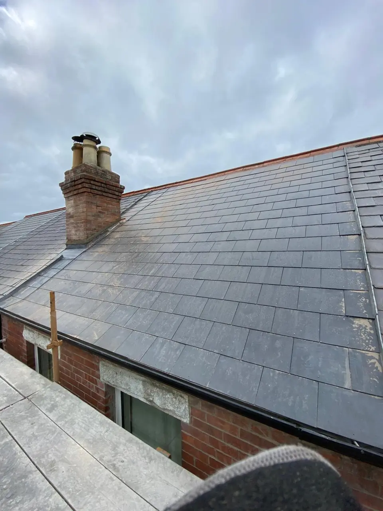
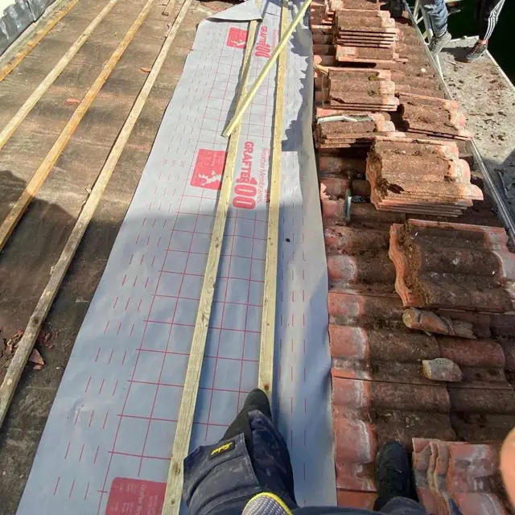
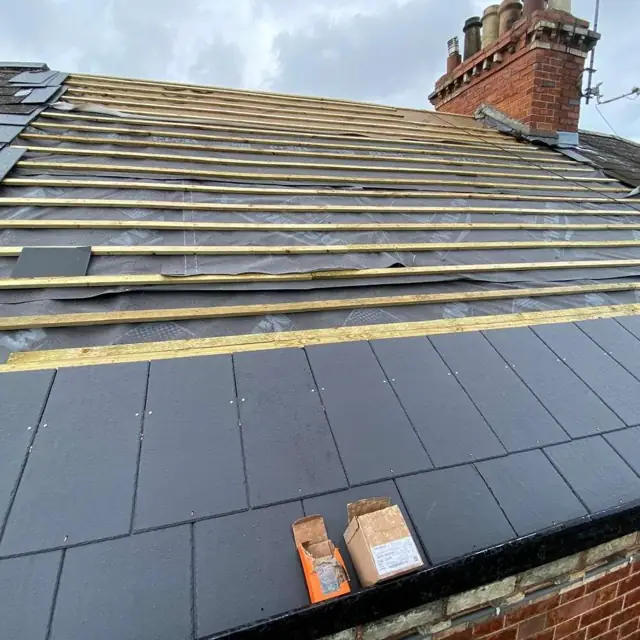

Dublin City & all of County Dublin
Professional roofing services
Roof repairs across Dublin. Fast, tidy, guaranteed.
A small team of expert tradesmen for roof repairs, new roofs, flat roofing, slate and tile, chimneys and roof cleaning. Friendly, affordable, and no job is too small.
- Free quotes
- Guaranteed work
- No job too small
- Homes & businesses
- Emergency repairs

Who we are
Local roofers you can count on, anywhere in County Dublin.
Whether you are in the heart of Dublin City or anywhere across the county, we are your local roofing specialists: expert repairs, replacements and maintenance, with fast, friendly and affordable service.
As a small team of expert tradesmen we pride ourselves on a first-class job done in a mature, friendly manner. We keep you informed at every step, and nothing happens on your property without your say-so.
More about usSkilled professionals
A dedicated, well-qualified team. From minor repairs to major projects, the workmanship is the same.
Years of experience
Many years in the trade across Dublin, on every common roof type and material.
End-to-end service
One contractor for the whole roof, so you are not chasing different trades for different tasks.
What we do
Roofing services across Dublin.
A full range of roofing work for homeowners and businesses across Dublin City and the surrounding areas.

Roof Repairs
From a few slipped slates to storm damage, repaired properly and promptly.
Learn more
New Roof Installation
Re-roofing and new roofs built with strong, long-lasting materials.
Learn more
Fibreglass Roofing
Seamless GRP roofs for extensions, dormers, garages and sheds.
Learn more
Flat Roof Repairs
Felt, EPDM rubber and fibreglass flat roofs, repaired or replaced.
Learn more
Tile & Slate Roofing
Installation, restoration and careful repair of slate and tiled roofs.
Learn more
Chimney Repairs
Flashing, repointing and brickwork to keep chimneys safe and dry.
Learn more
Dry Verge Systems
Mortar-free verge caps that protect roof edges from wind and rain.
Learn more
Dry Ridge Systems
Mechanically fixed ridge tiles that stay put in a storm.
Learn more
Roof Cleaning
Moss, algae and lichen removed, and kept away for longer.
Learn moreOur work
Recent jobs.
Real photos from our own jobs around Dublin. Tap one to see it full size.


How it works
Simple from first call to finished job.
Call or message us
Ring, WhatsApp or send the form and tell us what the roof is doing.
We take a look
We inspect the roof and explain plainly what needs doing, and what does not.
Free, clear quote
A no-obligation price with no hidden fees, before anything starts.
Job done, site tidy
Quality materials, careful work, and we clean up after ourselves.
Testimonials
What our customers say.
The best people to speak for our work are the people we have done it for.
Complete new roof
Roof Repairs Dublin did an excellent job replacing our roof. They were always on time, fixed any problems that arose in a very timely manner and always tidied up after they left. After spending several weeks researching and finding a roofer, we are very happy with the decision to go with Roof Repairs Dublin.James · Dublin
New flat roof
An excellent job done. All the team from Roof Repairs Dublin were friendly and efficient, I’m very happy with the end result.Mark · Swords
Roof overhaul and chimney repointed
Arrived on time. They gave good honest advice on the best options for our roof. All the workmen were friendly and polite, kept the work area clean and tidied everything away after themselves. Would definitely recommend to all my friends and family.Mary · Lucan
New flat roof on garage and vent tiles
They turned up at 8.30 am as agreed and were extremely tidy, replacing the flat roof on my garage, and came back the following day to fit the vent tiles they recommended. The damp in the loft has already started to clear. Extremely pleased and would highly recommend them.Gerry · Blanchardstown
Service areas
Local roofing experts across Dublin.
We cover Dublin City and the whole of County Dublin, including:
- Ballsbridge
- Dalkey
- Malahide
- Howth
- Castleknock
- Sandyford
- Monkstown
- Dublin 3
- Dublin 4
- Dublin 6
- Swords
- Blanchardstown
- Lucan
- Tallaght
- Clondalkin
- Dún Laoghaire
- Blackrock
- Rathfarnham
Free quote
Call for a free consultation.
Need a repair, a replacement, or just have a few questions? Whether it is a minor leak or a full new roof, we are here to help.